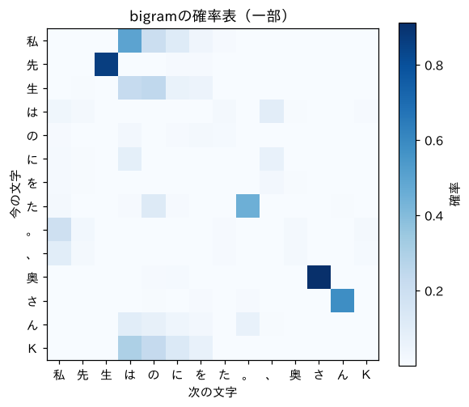

つくるもの bigramモデルを「確率の表（行列）」として作り直し、損失計算を一瞬で終わらせる
身につく数学・理論 ベクトル・行列・テンソルと「形（shape）」 行ごとの合計とブロードキャスト one-hotベクトルと行列の掛け算（＝表の行を取り出す） 行列の積の形のルール ( n × k ) ( k × m ) = ( n × m ) (n \times k)(k \times m) = (n \times m) ( n × k ) ( k × m ) = ( n × m ) なぜGPUは速いのか（並列計算） 新しく使うPython・PyTorch torch.tensor / torch.zeros.shape と .dtypeインデックスとスライス（N[i, j]、N[:, j]） sum(dim=…, keepdim=True)@（行列の掛け算）time で計測この章でつくるもの
第5章では、Pythonのfor文で1文字ずつ確率 を計算しました。それでも動きますが、これから作るモデルは何百万回、何億回 も計算します。for文では日が暮れて、夜が明けて、また日が暮れます。この章では、たくさんの数をまとめて一気に計算する道具 テンソル を手に入れ、bigram モデルを「確率の表」として作り直します。
これまでの復習とつながり：第3章・第4〜5章とのつながり
第3章 ：out.logits.shape が [1, 6, 151936] という3次元の「形」を持ち、dim=-1 で最後の軸に沿って softmax をかけたことを見ました。第4〜5章 ：『こころ』の語彙 2061文字から stoi（文字→番号）と bigram の回数表（2061×2061＝約420万マス）、スムージング 定数 k=0.01、検証損失 3.581 を作りました。
この章では、第3章でちらっと顔を出した テンソル・shape・dim の正体を完全に解き明かし、第4〜5章の bigram 確率表と損失計算をfor文なし・数行・一瞬 で動かせるように書き換えます！
ボンゴ先生
名前はね。でも中身は「数を並べた箱」だ。1列に並べたらベクトル、表にしたら行列、それを何枚も重ねたら3次元のテンソル。HTMLの <table> が書けるキミなら、もう半分わかっている。
準備
いつもの準備セル です（第5章と同じ）。今回は torch も使います。
Python（Colabのセルに貼って実行） コピー
import re, math, time, urllib.request
from collections import Counter
import torch
def load_soseki (file_id="773_ruby_5968" ):
url = ("https://raw.githubusercontent.com/aozorahack/aozorabunko_text/master/"
f"cards/000148/files/{file_id}/{file_id}.txt" )
text = urllib.request.urlopen(url).read().decode("cp932" )
text = text.split("-------------------------------------------------------" )[2 ]
text = text.split("底本：" )[0 ]
text = re.sub(r"《.*?》" , "" , text)
text = re.sub(r"※?［＃.*?］" , "" , text)
text = text.replace("｜" , "" ).replace("\r\n" , "\n" )
text = re.sub(r"\n{3,}" , "\n\n" , text)
return text.strip()
text = load_soseki()
chars = sorted (set (text))
V = len (chars)
stoi = {ch: i for i, ch in enumerate (chars)}
itos = {i: ch for ch, i in stoi.items()}
print ("語彙の数：" , V)Pythonの道具箱：辞書 を1行で作る
{ch: i for i, ch in enumerate(chars)} は、第2章でfor文を使って作った stoi を1行で書いたものです（辞書内包表記 ）。やっていることは同じです。
基礎の補足 理解のための最小コード：辞書内包表記 `{ch: i for i, ch in enumerate(chars)}`
ステップ 値（具体例） 型 起きていること
入力 chars = ['あ', 'い', 'う']list of strsorted(set(text)) で重複なし・順番固定のリスト enumerate(chars)(0, 'あ'), (1, 'い'), (2, 'う')(int, str) の列0始まりの番号 i と要素 ch を組にする 出力 stoi {'あ': 0, 'い': 1, 'う': 2}dict (str -> int)文字をキー、番号を値にした辞書を一気に作る 出力 itos {0: 'あ', 1: 'い', 2: 'う'}dict (int -> str)キーと値を入れ替えて逆引き辞書を作る
普通の for 文と完全に対応しています：
Python（読むだけ・実行しなくてOK） コピー
chars = ["あ" , "い" , "う" ]
# 通常の for 文で書くと3行：
stoi_loop = {}
for i, ch in enumerate (chars):
stoi_loop[ch] = i
# 辞書内包表記で書くと1行：
stoi = {ch: i for i, ch in enumerate (chars)}
print (stoi == stoi_loop, stoi) # True {'あ': 0, 'い': 1, 'う': 2} 確認問題 1 ：辞書内包表記で文字→IDの対応表 stoi と逆引き表 itos を作ります。次のコードを実行すると何が表示されますか？
自動採点・ヒント・解説の表示にはJavaScriptを有効にしてください。
テンソル入門：数を並べた箱
テンソルを作ってみましょう。
Python（Colabのセルに貼って実行） コピー
a = torch.tensor([1.0 , 2.0 , 3.0 ])
b = torch.tensor([10.0 , 20.0 , 30.0 ])
print (a + b)
print (a * b)
print (a * 2 )
print (a.sum ())出力
tensor([11., 22., 33.])
tensor([10., 40., 90.])
tensor([2., 4., 6.])
tensor(6.)ポイントは、for文を書いていないのに、全部の要素がいっぺんに計算されている ことです。a + b は「同じ位置どうしを足す」、a * 2 は「全部を2倍」。リストでやろうとすると、for文が必要でしたね。
次は2次元、つまり表です。
Python（Colabのセルに貼って実行） コピー
M = torch.tensor([[1 , 2 , 3 ],
[4 , 5 , 6 ]])
print (M.shape)
print (M[0 ]) # 0行目
print (M[:, 1 ]) # 1列目（全部の行の、1番目）
print (M[1 , 2 ]) # 1行目の2列目 出力
torch.Size([2, 3])
tensor([1, 2, 3])
tensor([2, 5])
tensor(6)理論の小部屋：ベクトル・行列・テンソルと「形」
数を1列に並べたもの：ベクトル （vector）。a は長さ3のベクトル
数を表（縦×横）に並べたもの：行列 （matrix）。M は2行3列の行列
さらに何枚も重ねたもの（3次元以上も含めた総称）：テンソル （tensor）
次元数（ランク） 呼び名 具体例 .shape要素数 .numel()
0次元 スカラー（数1個） torch.tensor(6)[]1 1 1 1次元 ベクトル torch.tensor([1, 2, 3])[3]3 3 3 2次元 行列（表） M（2行3列）[2, 3]2 × 3 = 6 2 \times 3 = 6 2 × 3 = 6 3次元 3次元テンソル 第3章の out.logits [1, 6, 151936]1 × 6 × 151936 1 \times 6 \times 151936 1 × 6 × 151936
多次元インデックスの読み方 （すべて 0始まり 、[行, 列] の順）：
M[0] → 0行目ぜんぶ：[1, 2, 3]（形 [3]）M[:, 1] → 全行の1列目：[2, 5]（形 [2]。: は「その軸を全部」の意味）M[1, 2] → 1行目の2列目：6（形 []）
テンソルを扱うときに一番大事なのは 形 （shape）です。この先、エラーの半分以上は「形が合わない」ことが原因です。迷ったら、とにかく .shape を print しましょう。これはこの教科書で一番役に立つアドバイスかもしれません。
基本情報とつながる：2次元配列
基本情報の擬似言語やアルゴリズムの問題で出てくる「2次元配列」が、まさに行列です。M[1, 2] は「1行目の2列目」。ただしPythonは0から数えるので、人間の感覚では「2行目の3列目」です。試験の問題が1から数えるか0から数えるかは、毎回確認しましょう。
確認問題 2 ：次の4つのテンソルの .shape と名称の組み合わせとして、正しい ものはどれですか？
自動採点・ヒント・解説の表示にはJavaScriptを有効にしてください。
確認問題 3 ：2行3列の行列 M = torch.tensor([[1, 2, 3], [4, 5, 6]]) に対して、M[:, 1] と M[1, 2] の組み合わせとして正しいものはどれですか？
自動採点・ヒント・解説の表示にはJavaScriptを有効にしてください。
bigramの表を作る
いよいよ本題です。第4章の「今の文字（行）×次の文字（列）」の表を、2061×2061の行列として作ります。
Python（Colabのセルに貼って実行） コピー
n = int (len (text) * 0.9 )
train_text, val_text = text[:n], text[n:]
pairs = Counter(zip (train_text, train_text[1 :]))
N = torch.zeros((V, V))
for (a, b), count in pairs.items():
N[stoi[a], stoi[b]] = count
print (N.shape)
print ("「先」→「生」の回数：" , N[stoi["先" ], stoi["生" ]].item())
print ("表のマスの数：" , N.numel(), " うち0でないマス：" , (N > 0 ).sum ().item())出力
torch.Size([2061, 2061])
「先」→「生」の回数： 597.0
表のマスの数： 4247721 うち0でないマス： 20395Pythonの道具箱：.item() と比較
N[i, j] の結果は「数が1つだけ入ったテンソル」です。.item() を付けると、ふつうのPythonの数として取り出せます。N > 0 は、全部のマスについて「0より大きい？」を調べた、True/Falseの表を作ります。それを .sum() すると、Trueの数（＝0でないマスの数）が数えられます。
約420万マスのうち、0でないのは約2万マス（0.5%以下）。第4章で話した「スパース（まばら）」が、数字で見えました。
基礎の補足 理解のための最小コード：`.shape`・`.dtype`・`.item()`・`.numel()`
属性 / メソッド 具体例と出力 型 役割
x.shapetorch.Size([2, 3])torch.Size各軸の長さ（形）。デバッグの最優先チェック項目 x.dtypetorch.float32 / torch.int64 / torch.booltorch.dtype中身の数値型（torch.zeros は既定で float32、整数リストは int64） x.numel()6（2 × 3 2 \times 3 2 × 3 intテンソル内の総要素数（number of elements） s.item()tensor(597.0).item() → 597.0float / int要素1個だけ のテンソルから普通のPython数値を取り出す
Python（読むだけ・実行しなくてOK） コピー
import torch
t_int = torch.tensor([1 , 2 , 3 ]) # dtype: torch.int64（ID・インデックス用）
t_flt = torch.tensor([1.0 , 2.0 , 3.0 ]) # dtype: torch.float32（確率・重み用）
mask = (t_int > 1 ) # tensor([False, True, True]), dtype: torch.bool
print (mask.sum (), mask.sum ().item()) # tensor(2) 2 確認問題 4 ：本文のコード (N > 0).sum().item() がやっている処理の正しい順番と、最終的な戻り値の型はどれですか？
自動採点・ヒント・解説の表示にはJavaScriptを有効にしてください。
回数を確率に変える：行ごとの合計とブロードキャスト
回数を確率にするには、各行を「その行の合計」で割ればよいのでした。スムージングの k も足しておきます。
Python（Colabのセルに貼って実行） コピー
k = 0.01
row_sums = (N + k).sum (dim=1 , keepdim=True )
print (row_sums.shape)
P = (N + k) / row_sums
print (P.shape)
print ("各行の合計（最初の5行）：" , P.sum (dim=1 )[:5 ])出力
torch.Size([2061, 1])
torch.Size([2061, 2061])
各行の合計（最初の5行）： tensor([1.0000, 1.0000, 1.0000, 1.0000, 1.0000])理論の小部屋：合計の方向と、ブロードキャスト
sum(dim=1) は「1番目の軸（横方向）に沿って足す」、つまり各行の合計 です。dim=0 なら各列の合計になります。keepdim=True は「足した軸を消さずに長さ1で残す」指定で、結果の形は [2061, 1]（縦に2061個並んだ数）になります。
dim=0：縦方向に足す（0番目の軸をつぶす → 各列 の合計になる）dim=1：横方向に足す（1番目の軸をつぶす → 各行 の合計になる）
2行3列の具体例 M = ( 1 2 3 4 5 6 ) M = \begin{pmatrix} 1 & 2 & 3 \\ 4 & 5 & 6 \end{pmatrix} M = ( 1 4 2 5 3 6 ) [2, 3]）で手計算してみましょう：
M.sum(dim=0) → 縦に足す：[1+4, 2+5, 3+6] = [5, 7, 9]（形 [3]）M.sum(dim=1) → 横に足す：[1+2+3, 4+5+6] = [6, 15]（形 [2]）M.sum(dim=1, keepdim=True) → 横に足し、軸1を長さ1で残す：[[6], [15]]（形 [2, 1]）
そして (N + k) / row_sums では、形が [2061, 2061] と [2061, 1] で違うのに、割り算ができています。これは ブロードキャスト という仕組みで、長さ1の軸が自動的に「横にコピーされた」ものとして扱われるからです。
[[a, b, c], [[x], [[a/x, b/x, c/x],
[d, e, f]] ÷ [y]] → [d/y, e/y, f/y]]
各行が、その行の合計で割られます。for文なしで、420万マスの割り算が一瞬です。
基礎の補足 ステップで理解するブロードキャストの「右揃えルール」2つのテンソルの形が違うとき、PyTorchは次の2ステップで計算できるか判定します。
2つの形を右端にそろえて並べる （足りない左側には 1 を補って考える）各軸について「数字が一致する」または「どちらかが 1」ならOK （1 の側がもう片方の長さにコピーされる）
左の形 右の形 右揃えにした姿 判定と結果の形
[2, 3][2, 1](2, 3) と (2, 1)OK → [2, 3]（右の軸1が横に3倍コピー）[2, 3][3](2, 3) と (1, 3)OK → [2, 3]（右の軸0が縦に2倍コピー）[2, 3][2](2, 3) と (1, 2)ERROR （右端が 3 と 2 で不一致、かつどちらも 1 でない）[2, 1][1, 3](2, 1) と (1, 3)OK → [2, 3]（お互いに引き伸ばされる）
つまずき注意：keepdim を忘れると「静かなバグ」が起きる！（2×2の具体例で実証）
keepdim=True を付けないと、row_sums の形は [2061]（1次元）になります。右揃えルールのため、正方形 [2061, 2061] とは次のように見なされます。
[2061, 2061] と [2061] → [2061, 2061] と [1, 2061] として扱われる
小さな 2×2 行列 N = ( 1 3 6 2 ) N = \begin{pmatrix} 1 & 3 \\ 6 & 2 \end{pmatrix} N = ( 1 6 3 2 ) 正しい計算 と keepdim 忘れのバグ
正しい計算（keepdim=True、形 [2, 1]＝[[4], [8]]） ：横にコピーされて [[4, 4], [8, 8]] で割る
P = ( 1 / 4 3 / 4 6 / 8 2 / 8 ) = ( 0.25 0.75 0.75 0.25 ) （各行の合計：1.0, 1.0） P = \begin{pmatrix} 1/4 & 3/4 \\ 6/8 & 2/8 \end{pmatrix} = \begin{pmatrix} 0.25 & 0.75 \\ 0.75 & 0.25 \end{pmatrix} \quad \text{（各行の合計：1.0, 1.0）} P = ( 1/4 6/8 3/4 2/8 ) = ( 0.25 0.75 0.75 0.25 ) （各行の合計： 1.0, 1.0 ）
バグ（keepdim 忘れ、形 [2] → [1, 2]＝[[4, 8]]） ：縦にコピーされて [[4, 8], [4, 8]] で列ごと に割ってしまう！
bad_P = ( 1 / 4 3 / 8 6 / 4 2 / 8 ) = ( 0.25 0.375 1.5 0.25 ) （確率が1.5！各行の合計も 0.625, 1.75！） \text{bad\_P} = \begin{pmatrix} 1/4 & 3/8 \\ 6/4 & 2/8 \end{pmatrix} = \begin{pmatrix} 0.25 & 0.375 \\ \mathbf{1.5} & 0.25 \end{pmatrix} \quad \text{（確率が1.5！各行の合計も 0.625, 1.75！）} bad_P = ( 1/4 6/4 3/8 2/8 ) = ( 0.25 1.5 0.375 0.25 ) （確率が 1.5 ！各行の合計も 0.625, 1.75 ！） Python（読むだけ・実行しなくてOK） コピー
import torch
N_small = torch.tensor([[1 ., 3 .], [6 ., 2 .]])
print ("正しい P:\n" , N_small / N_small.sum (dim=1 , keepdim=True ))
print ("バグ bad_P:\n" , N_small / N_small.sum (dim=1 )) # エラーにならず 1.5 が出る！ 正方形行列では右端がたまたま一致するため、エラーにならずに間違った答えが出ます 。形を print して P.sum(dim=1) が1になるか確かめるクセをつけましょう。
確認問題 5 ：2行3列の行列 M = ( 1 2 3 4 5 6 ) M = \begin{pmatrix} 1 & 2 & 3 \\ 4 & 5 & 6 \end{pmatrix} M = ( 1 4 2 5 3 6 ) s = M.sum(dim=1)（各行 の合計）を計算したとき、1番目の要素 s[1] （下の行の合計）はいくつになりますか？（整数で入力）
自動採点・ヒント・解説の表示にはJavaScriptを有効にしてください。
確認問題 6 ：bigramの回数行列 N（形 [2061, 2061]、行＝今の文字、列＝次の文字）に対して、N.sum(dim=0) の形 と意味 の組み合わせとして正しいものはどれですか？
自動採点・ヒント・解説の表示にはJavaScriptを有効にしてください。
確認問題 7 ：ブロードキャストの「右端の軸からそろえ、各軸が一致するか、どちらかが 1 ならOK 」というルールに従うとき、次のうちエラーになる（計算できない） 組み合わせはどれですか？
自動採点・ヒント・解説の表示にはJavaScriptを有効にしてください。
確認問題 8 ：2×2行列 N = ( 1 3 6 2 ) N = \begin{pmatrix} 1 & 3 \\ 6 & 2 \end{pmatrix} N = ( 1 6 3 2 ) keepdim=True を忘れて s = N.sum(dim=1)（tensor([4., 8.])、形 [2]）で bad_P = N / s を計算してしまいました。このとき bad_P[1, 0]6 の位置）はいくつになってしまいますか？（小数で入力）
自動採点・ヒント・解説の表示にはJavaScriptを有効にしてください。
確認問題 9 ：2次元リスト（行列）matrix とスムージング定数 k=0.0 を受け取り、各要素に k を足したうえで各行の合計が 1.0 になるよう正規化した新しい2次元リストを返す関数 normalize_rows(matrix, k=0.0) を純粋なPythonだけで実装してください。なお、形チェック として①空リスト・空行、②行ごとに列数が違う（長方形でない）、③ある行の合計が0以下、のいずれかに当てはまる場合は ValueError を送出してください。
自動採点・ヒント・解説の表示にはJavaScriptを有効にしてください。
損失を一瞬で計算する
第5章では、for文で1文字ずつ損失を計算しました。テンソルなら、こうなります。
Python（Colabのセルに貼って実行） コピー
val_ids = torch.tensor([stoi[c] for c in val_text])
xs, ys = val_ids[:-1 ], val_ids[1 :]
start = time.time()
probs = P[xs, ys]
loss = -probs.log().mean()
print (f"検証データの損失：{loss.item():.3f}（{time.time() - start:.4f}秒）" )出力の例（数値や文章は実行ごとに変わってOK）
検証データの損失：3.581（0.0012秒）第5章と同じ 3.581 です。P[xs, ys] は「xs の各文字の行の、ys の各文字の列」をいっぺんに取り出す書き方（高度なインデックス ）で、16,246個の確率が一度に手に入ります。.log() で全部の対数をとり、.mean() で平均。3行で損失が出ました。
ボンゴ先生
同じことをfor文でやると、パソコンにもよるが100倍くらい時間がかかる。テンソルの計算は、中身がC言語などで書かれた高速なプログラムで、しかもまとめて処理されるからだ。「Pythonでfor文を書いたら負け」という格言が、機械学習の世界にはある。……まあ、第4章で散々書いたけどね。
確認問題 10 ：本文の xs, ys = val_ids[:-1], val_ids[1:] と P[xs, ys] の仕組みを純粋なPythonリストで再現します。次のコードを実行すると何が表示されますか？
自動採点・ヒント・解説の表示にはJavaScriptを有効にしてください。
表を眺める
表の一部を、色の濃さで描いてみましょう。
Python（Colabのセルに貼って実行） コピー
!pip install -q matplotlib-fontja Python（Colabのセルに貼って実行） コピー
import matplotlib.pyplot as plt
import matplotlib_fontja
look = ["私" , "先" , "生" , "は" , "の" , "に" , "を" , "た" , "。" , "、" , "奥" , "さ" , "ん" , "Ｋ" ]
idx = [stoi[c] for c in look]
sub = P[idx][:, idx]
plt.figure(figsize=(6 , 5 ))
plt.imshow(sub, cmap="Blues" )
plt.xticks(range (len (look)), look)
plt.yticks(range (len (look)), look)
plt.xlabel("次の文字" )
plt.ylabel("今の文字" )
plt.colorbar(label="確率" )
plt.title("bigramの確率表（一部）" )
plt.show()

「先→生」「奥→さ」「さ→ん」（奥さん！）が濃く光っています。この表こそが、bigramモデルの「頭の中」のすべてです。
表から文章を作る
テンソル版の生成も作っておきましょう。torch.multinomial は、第3章で自作したくじ引きのテンソル版です。
Python（Colabのセルに貼って実行） コピー
g = torch.Generator().manual_seed(0 )
ix = stoi["私" ]
out = ["私" ]
for _ in range (60 ):
ix = torch.multinomial(P[ix], num_samples=1 , generator=g).item()
out.append(itos[ix])
print ("" .join(out))出力
私は段加減です。そう渇様子先生といと私はた。しまで。私は一種を極ったがら見える資刹郵濯耐皇奪焼肩煎諺者櫓剛示樹息貪橋の男で（出てくる文章は、乱数の種 manual_seed(0) の数字を変えると変わります。）
ミナト
途中で「資刹郵濯耐皇奪…」って、読めない漢字が延々と続いてますけど……。
ボンゴ先生
いいところに気づいた！ これはスムージングの副作用 だ。珍しい文字の行は、数えた回数の合計がとても少ない。そこに全部の文字へ0.01ずつ、合計 0.01 × 2061 ≈ 20.6 0.01 \times 2061 \approx 20.6 0.01 × 2061 ≈ 20.6
確認問題 11 ：スムージング（k=0.01）を足した確率表 P から文章を生成したら、途中で「資刹郵濯耐皇奪…」と珍しい漢字が延々と続いてしまいました。この現象の正しい原因はどれですか？
自動採点・ヒント・解説の表示にはJavaScriptを有効にしてください。
one-hotと行列の掛け算
最後に、次の章から何度も出てくる大事な計算を1つ。行列の掛け算 です。
文字「私」を、「私」の位置だけ1で、残りが全部0の長さ2061のベクトルで表すことにします。これを one-hot （ワンホット、1か所だけ熱い）ベクトルと言います。
Python（Colabのセルに貼って実行） コピー
import torch.nn.functional as F
x = F.one_hot(torch.tensor(stoi["私" ]), num_classes=V).float ()
print (x.shape, x.sum ())
row = x @ P # one-hot × 確率表
print (row.shape)
print (torch.allclose(row, P[stoi["私" ]]))出力
torch.Size([2061]) tensor(1.)
torch.Size([2061])
True@ は行列の掛け算の記号です。one-hotベクトルに表を掛けると、表の「私」の行がそのまま取り出される ことが確かめられました（allclose は「ほぼ等しい？」を調べる関数）。
数学の道具箱：行列の掛け算 `@`：9ステップで理由から理解する
① 解決したい問題 ：「入力の重み付き和」や「表からの行の取り出し」を、1件ずつではなく何千件分も一気に・微分（第7章）可能な数式で計算したい。
② 要素ごとの積 * と行列積 @ の決定的な違い ：
A * B：同じ位置のマスどうしを掛けるだけ（形が一致するかブロードキャストが必要）。A @ B：左の行 と右の列 の同じ位置どうしを掛けて足す（内積 を全ペアで計算する）。
③ 小さな例で手計算（1×2 @ 2×3 と 2×2 @ 2×2） ： まず 1×2 と 2×3 の積です。
( 1 2 ) ( 3 4 5 6 7 8 ) = ( 1 ⋅ 3 + 2 ⋅ 6 1 ⋅ 4 + 2 ⋅ 7 1 ⋅ 5 + 2 ⋅ 8 ) = ( 15 18 21 ) \begin{pmatrix} 1 & 2 \end{pmatrix} \begin{pmatrix} 3 & 4 & 5 \\ 6 & 7 & 8 \end{pmatrix} = \begin{pmatrix} 1\cdot3+2\cdot6 & 1\cdot4+2\cdot7 & 1\cdot5+2\cdot8 \end{pmatrix} = \begin{pmatrix} 15 & 18 & 21 \end{pmatrix} ( 1 2 ) ( 3 6 4 7 5 8 ) = ( 1 ⋅ 3 + 2 ⋅ 6 1 ⋅ 4 + 2 ⋅ 7 1 ⋅ 5 + 2 ⋅ 8 ) = ( 15 18 21 ) 2行2列どうしでも同じ手順です（左の i 行目 × 右の j 列目 ＝ 結果の (i, j) マス）：
( 1 2 3 4 ) ( 5 6 7 8 ) = ( 1 ⋅ 5 + 2 ⋅ 7 1 ⋅ 6 + 2 ⋅ 8 3 ⋅ 5 + 4 ⋅ 7 3 ⋅ 6 + 4 ⋅ 8 ) = ( 19 22 43 50 ) \begin{pmatrix} 1 & 2 \\ 3 & 4 \end{pmatrix} \begin{pmatrix} 5 & 6 \\ 7 & 8 \end{pmatrix} = \begin{pmatrix} 1\cdot5+2\cdot7 & 1\cdot6+2\cdot8 \\ 3\cdot5+4\cdot7 & 3\cdot6+4\cdot8 \end{pmatrix} = \begin{pmatrix} 19 & 22 \\ 43 & 50 \end{pmatrix} ( 1 3 2 4 ) ( 5 7 6 8 ) = ( 1 ⋅ 5 + 2 ⋅ 7 3 ⋅ 5 + 4 ⋅ 7 1 ⋅ 6 + 2 ⋅ 8 3 ⋅ 6 + 4 ⋅ 8 ) = ( 19 43 22 50 ) 左の行 と右の列 の、同じ位置どうしを掛けて足す。これをすべての組み合わせでやります。
Python（Colabのセルに貼って実行） コピー
A = torch.tensor([[1 ., 2 .]])
B = torch.tensor([[3 ., 4 ., 5 .],
[6 ., 7 ., 8 .]])
print (A @ B)
print (A.shape, "@" , B.shape, "→" , (A @ B).shape)出力
tensor([[15., 18., 21.]])
torch.Size([1, 2]) @ torch.Size([2, 3]) → torch.Size([1, 3])④ 一般式と形のルール ：
( A B ) i , j = ∑ t = 0 k − 1 A i , t B t , j (AB)_{i, j} = \sum_{t=0}^{k-1} A_{i, t}\, B_{t, j} ( A B ) i , j = t = 0 ∑ k − 1 A i , t B t , j
形のルール ：( n × k ) (n \times k) ( n × k ) ( k × m ) (k \times m) ( k × m ) ( n × m ) (n \times m) ( n × m ) 真ん中の k k k （例：[2, 3] @ [2, 3] はエラー、[32, 2061] @ [2061, 64] は [32, 64]）。これが「形が合わない」エラーの正体です。
⑤ なぜ one-hot × 行列 ＝ 行の取り出し になるのか？（具体計算） ：
( 0 1 0 ) ( 10 20 30 40 50 60 ) = 0 ⋅ ( 10 20 ) + 1 ⋅ ( 30 40 ) + 0 ⋅ ( 50 60 ) = ( 30 40 ) \begin{pmatrix} 0 & 1 & 0 \end{pmatrix} \begin{pmatrix} 10 & 20 \\ 30 & 40 \\ 50 & 60 \end{pmatrix} = 0\cdot\begin{pmatrix} 10 & 20 \end{pmatrix} + 1\cdot\begin{pmatrix} 30 & 40 \end{pmatrix} + 0\cdot\begin{pmatrix} 50 & 60 \end{pmatrix} = \begin{pmatrix} 30 & 40 \end{pmatrix} ( 0 1 0 ) 10 30 50 20 40 60 = 0 ⋅ ( 10 20 ) + 1 ⋅ ( 30 40 ) + 0 ⋅ ( 50 60 ) = ( 30 40 ) one-hotベクトルを掛けると、「1の位置の行 × 1」以外は全部「× 0」で消えるので、1の位置の行がそのまま出てくるのです。
⑥ 純粋なPythonの3重ループとの対応 ：
Python（読むだけ・実行しなくてOK） コピー
# (n x k) @ (k x m) -> (n x m) の正体は、実はこの3重ループ！
C = [[sum (A[i][t] * B[t][j] for t in range (k)) for j in range (m)] for i in range (n)]理論の小部屋：なぜこれが大事なのか
「one-hot × 表 ＝ 表の行を取り出す」。当たり前に見えますが、ここに大事な発想の転換があります。
今は、表の中身（確率）を数えて 決めました
でも、表の中身を学習で少しずつ調整する数（パラメータ） にしたら？
第8章では、まさにそれをやります。表の中身を最初はでたらめにして、損失が小さくなるように少しずつ調整していくのです。そのためには「調整の方向」を知る必要があります。それが次の章の 微分 です。
確認問題 12 ：形が [32, 2061] のテンソルと [2061, 64] のテンソルを行列積 @ で掛けると、結果の形は何になりますか？
自動採点・ヒント・解説の表示にはJavaScriptを有効にしてください。
確認問題 13 ：2×2行列 A = ( 1 2 3 4 ) A = \begin{pmatrix} 1 & 2 \\ 3 & 4 \end{pmatrix} A = ( 1 3 2 4 ) B = ( 5 6 7 8 ) B = \begin{pmatrix} 5 & 6 \\ 7 & 8 \end{pmatrix} B = ( 5 7 6 8 ) C = A @ B C = A @ B C = A @ B 0行1列目の要素 C[0, 1] （右上）はいくつになりますか？（整数で入力）
自動採点・ヒント・解説の表示にはJavaScriptを有効にしてください。
確認問題 14 ：3行2列の行列 W = ( 10 20 30 40 50 60 ) W = \begin{pmatrix} 10 & 20 \\ 30 & 40 \\ 50 & 60 \end{pmatrix} W = 10 30 50 20 40 60 x = ( 0 1 0 ) x = \begin{pmatrix} 0 & 1 & 0 \end{pmatrix} x = ( 0 1 0 ) x @ W x @ W x @ W [30, 40]（1行目そのもの）
自動採点・ヒント・解説の表示にはJavaScriptを有効にしてください。
確認問題 15 ：2次元リスト（行列）A（形 n × k）と B（形 k × m）の行列積 A @ B A @ B A @ B n × m）を純粋なPythonだけで計算する関数 matmul(A, B) を実装してください。空行列、長方形でない行列、または内側の次元が不一致（len(A[0]) != len(B)） の場合は ValueError を送出してください。
自動採点・ヒント・解説の表示にはJavaScriptを有効にしてください。
GPUは何が速いのか
理論の小部屋：並列計算
行列の掛け算は、「掛けて足す」をたくさん、お互いに関係なく 計算できます。2061×2061の行列どうしの掛け算なら、約87億回の掛け算です。
CPU ：とても賢い職人が数人〜数十人。複雑な仕事が得意GPU ：そこそこの作業員が数千人。単純な計算を同時に こなすのが得意
行列の掛け算は「単純な計算を大量に」の典型なので、GPUの独壇場です。LLMの計算のほとんどは行列の掛け算なので、LLMにはGPUが欠かせないのです。Colabで確かめたい人は、次を実行してみてください（CPUのままなら cuda の行は飛ばされます）。
Python（Colabのセルに貼って実行） コピー
X = torch.randn(2000 , 2000 )
start = time.time(); _ = X @ X; print (f"CPU：{time.time() - start:.3f}秒" )
if torch.cuda.is_available():
Xg = X.to("cuda" ); _ = Xg @ Xg; torch.cuda.synchronize()
start = time.time(); _ = Xg @ Xg; torch.cuda.synchronize()
print (f"GPU：{time.time() - start:.4f}秒" )出力の例（数値や文章は実行ごとに変わってOK）
CPU：0.152秒
GPU：0.0021秒確認問題 16 ：Pythonの for 文で1文字ずつ計算するより PyTorch のテンソル演算が速く、さらに巨大な行列積 X @ X ではCPUよりGPUが数十〜数百倍速いのはなぜですか？ Pythonループとの違い と 行列積の並列性（CPU vs GPU） の2点から説明してください。
自動採点・ヒント・解説の表示にはJavaScriptを有効にしてください。
もっと深く NumPyとの関係Pythonで数の表を扱う道具としては、NumPy （ナムパイ）も有名です。numpy.array はテンソルとほぼ同じ使い心地で、データ分析ではNumPyが主役です。PyTorchのテンソルはNumPyの配列に「GPUで動く」「微分を自動で計算できる（次の章）」機能を足したもの、と考えてOKです。t.numpy() と torch.from_numpy(a) で行き来できます。
まとめ
テンソル は数を並べた箱。1次元がベクトル、2次元が行列。一番大事なのは 形（shape） テンソルの計算はfor文なしで全要素をまとめて処理するので、とても速い
sum(dim=1, keepdim=True) と ブロードキャスト で、各行を合計で割れる行列の掛け算の形のルール：( n × k ) @ ( k × m ) = ( n × m ) (n \times k) @ (k \times m) = (n \times m) ( n × k ) @ ( k × m ) = ( n × m )
one-hot × 表 ＝ 表の行の取り出し 。この表の中身を「学習で決める」のが次の目標
ボンゴ先生
表の中身を「数える」のではなく「学習で決める」。そのためには、中身を少し変えたら損失がどう変わるかを知る必要がある。それを教えてくれるのが微分 だ。次の章は、坂道を転がるボールの話から始めよう。物理屋の血が騒ぐね。
この章の説明を読み終えた！ 説明の読了チェックです（ブラウザ内にのみ保存）。「理解・定着」は途中の確認問題・自力実装・間隔復習の結果と合わせて記録されます。